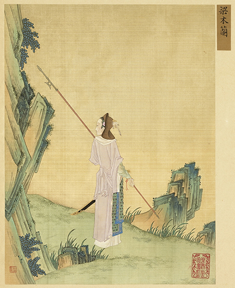

For nearly a century, Walt Disney Animation Studios has shaped the imaginations of millions, establishing itself as the world's premier storyteller through its enchanting, timeless animated features. However, in recent years, Disney's live-action remakes have consistently dominated the global box office, but they have also consistently sparked heated debates among audiences and critics. In Richard Newby's article "Lion King, Originality and the Backlash Against Remakes" and the YouTube video essay "The Problem With Disney's Movies In One Word" by Nerdstalgic, both authors explore the root causes of this intense public division. An analysis of these two perspectives reveals that the intense backlash against Disney's remakes stems from far more than a mere lack of originality; rather, it represents a complex, multifaceted reaction. It is both a resistance to perfunctory and careless execution of creative work and a warning against the toxic double-edged sword of "nostalgia," and stems from modern moviegoers' growing concern about corporate monopolies and manipulation of shared cultural narratives.
Criticizing Disney's live-action remakes solely for their lack of originality misses the core issue, as the studio's foundational legacy was built entirely upon adapting pre-existing tales rather than inventing new ones. Many critics complain that remaking films like The Lion King or Aladdin proves Hollywood has run out of new ideas. However, adaptation is a longstanding human storytelling tradition; Disney's very empire was constructed not on original screenplays, but on the continual reimagining of public domain fairy tales. As Richard Newby explains, "The vast majority of Disney's animated classics are already retellings. The studio's cinematic success that began with Snow White and the Seven Dwarves (1937) was founded on the idea of remaking" (par. 3). By emphasizing the word "founded," Newby illustrates that retelling is not a modern symptom of creative bankruptcy, but rather the very bedrock of Disney's historical legacy. While this historical legacy originally had a positive cultural impact by popularizing global folklore for new generations, Disney's modern strategy of endlessly remaking its own copyrighted material shifts this legacy from cultural preservation to a form of creative self-cannibalization. The crucial distinction, then, is not between originality and adaptation, but between meaningful reimagination and mechanical reproduction—and it is precisely this distinction that today's audiences sense and reject. Conversely, Nerdstalgic points out that intertextual moments "shouldn't be relied on to make up for the lack of storytelling creativity. It's almost as if Disney believes we aren't smart enough or capable enough of understanding a new story" (5:55-6:05). The specific phrasing "smart enough" and "capable enough" shifts the criticism from a mere lack of ideas to a direct insult to the audience's intellect. Nerdstalgic illustrates frustration with Disney's reliance on familiar callbacks, implying that the studio prioritizes safe, established material over challenging viewers with genuine storytelling creativity. While Newby uses the word "founded" to state the objective historical fact that retelling stories is the norm for the studio, Nerdstalgic's diction argues that Disney's current method leans too heavily on mere visual recognition rather than actual creative effort. Together, these perspectives suggest that audiences are not inherently against the concept of remakes, but rather the lazy execution that fails to treat viewers with intellectual respect.
Furthermore, the intense nostalgia that drives the immense financial success of Disney's remakes is simultaneously the source of the harshest and most toxic audience backlash. Audiences are drawn to these live-action remakes out of a deep desire to revisit the comfort of their childhood favorites. Yet, because these animated films are so deeply ingrained in their pop-culture consciousness, any deviation from the original memory—such as updating a character's appearance or changing casting—often sparks immediate and intense outrage. Addressing this, Newby notes, "There is unquestionably an element of nostalgia that drives audiences to theaters to see Disney's Aladdin remake or Beauty and the Beast (2017), and that element is largely the reason behind why casting decisions so often turn ugly" (par. 8). The author's use of the word "ugly" conveys the toxic nature of modern fan culture. It symbolizes how pure nostalgia can warp into a rigid, exclusionary mindset, where fans feel a misguided sense of ownership and entitlement over how classic characters "should" look based strictly on the Disney versions they grew up with. Nerdstalgic echoes this sentiment, observing, "We begin to seek out the nostalgia and resent everything that isn't" (4:19-4:24). This quote conveys the restrictive and dangerous nature of nostalgia. The use of the word "resent" portrays an audience so addicted to their idealized childhood memories that they actively reject any new interpretations or creative deviations. Nerdstalgic's observation that audiences "resent" deviations perfectly explains Newby's point about why Disney's casting decisions so often turn "ugly". Both authors agree that nostalgia is a double-edged sword: while it guarantees massive ticket sales, it simultaneously breeds a rigid, toxic fan environment that stifles any progressive artistic choices in modern remakes. This paradox raises a critical question: if nostalgia is both the economic engine and the creative prison of Disney's remake strategy, can the studio ever break free without alienating the very audience it depends on?
To observe the destructive collision of these two forces—rigid nostalgia and corporate strategy—one need look no further than the recent live-action adaptation of The Little Mermaid (2023). When Disney announced a casting choice that deviated from the 1989 animated visual template, the internet was immediately flooded with the exact "ugly" backlash Newby described. Fans weaponized their nostalgia, arguing that the studio was ruining a "traditional" character—yet this supposed tradition is itself a Disney invention. The original Hans Christian Andersen tale featured no such rigid visual parameters and was fundamentally a tragic story about sacrifice and loss, not a sanitized musical romance. This controversy exemplifies Newby's warning that Disney's remakes have become "the dominant tellings of these stories, while the knowledge that they are only a small part of history has become lost on too many moviegoers" (par. 10). The very audiences protesting changes to "their" Little Mermaid are unknowingly proving his point: they have already forgotten that the story never belonged to Disney in the first place. Nerdstalgic's observation that audiences "resent everything that isn't" nostalgia (4:19-4:24) is likewise made viscerally concrete here—fans did not merely dislike the new casting; they resented it as a personal violation of their childhood memory. By viewing the 1989 animated film as the definitive, untouchable canon, these reactionary audiences demonstrate how completely Disney's corporate version has overwritten centuries of diverse folk storytelling.
The Little Mermaid controversy is not an isolated incident but a symptom of this far larger structural problem: the underlying anxiety surrounding Disney's remakes is rooted in a fear of corporate dominance and the monopolization of shared cultural narratives. While global fairy tales historically existed in countless localized variations, Disney's branded versions have effectively homogenized these narratives on a global scale. Critics and film fans worry that by constantly remaking these specific properties, a single massive corporation is erasing the broader history of these global stories and replacing it with its own branded content. Newby addresses this concern, stating, "The issue has become, at least for those film fans weary of Disney's hold, that these remakes are now the dominant tellings of these stories, while the knowledge that they are only a small part of history has become lost on too many moviegoers..." (par. 10). Newby depicts the danger of allowing a single media giant to control universal human traditions. The phrase "dominant tellings" suggests an erasure of cultural history, portraying Disney not just as a filmmaker, but as a corporate entity actively monopolizing and rewriting the human experience of storytelling. 
The discussions surrounding Disney's live-action remakes reveal far more than just a simple preference for original ideas. As Newby and Nerdstalgic point out, the true tension lies precisely at the intersection of audience expectations and corporate strategy. Retelling stories is a fundamental aspect of human culture, yet the use of superficial visual references, devoid of authentic innovation, diminishes the audience's experience. Moreover, the very nostalgia that Disney exploits for financial gain ensnares the studio in a detrimental pattern; any departure from established norms provokes backlash, while exact replication appears stagnant. From Hans Christian Andersen's tragic mermaid to the Confucian warrior of《木兰辞》, Disney has repeatedly flattened complex cultural traditions into a single commercialized template. As the primary global custodian of these enduring narratives, Disney must acknowledge its audience's evolution. To sustain these stories, rather than reducing them to formulaic products designed solely for profit, the company must embrace creative risks and evolve in tandem with its audience.